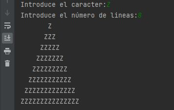

Ejercicios de la Unidad 3
| Fecha | Versión | Descripción |
|---|---|---|
| 19/09/2021 | 1.0.0 | Versión inicial |
1 Iniciación
⚡ Ninguna función mostrará nada por pantalla a no ser que se diga lo contrario.
- Escribe un programa que pida dos números reales por teclado y muestre por pantalla el resultado de multiplicarlos. Implementa y utiliza la función:
- Escribe un programa que pida la edad por teclado y muestre por pantalla si eres mayor de edad o no. Implementa y utiliza la función:
- Escribe un programa que pida dos números enteros por teclado y muestre por pantalla cual es el mínimo. Implementa y utiliza la función:
- Escribe un programa que pida un número entero por teclado y muestre por pantalla si es positivo, negativo o cero. Implementa y utiliza la función:
- Escribe un programa que pida un valor entero en millas y muestre su equivalente en kilómetros. Recuerda que una milla son 1,60934 kilómetros. Implementa y utiliza la función:
- Escribe un programa que pida cinco precios y muestre por pantalla el precio de venta de cada uno tras aplicarle un 21% de IVA. Implementa y utiliza la función:
- Escribe un programa que pida el ancho y alto de un rectángulo y muestre por pantalla su área y su perímetro. Implementa y utiliza las funciones:
- Escribe un programa que pida un valor N entero y luego muestre: el sumatorio des 1 a N, el productorio de 1 a N y el valor intermedio entre 1 y N. Implementa y utiliza las funciones:
2. Intermedio
-
Realiza un programa que pida introducir tres valores enteros y nos diga cuál de ellos es el más elevado. Impleméntalo creando únicamente una función a la que le pasemos dos valores (no tres) y nos devuelva el máximo de los dos valores.
-
Realiza un programa que lea una fecha introduciendo el día, mes y año por separado y nos diga si la fecha es correcta o no. Supondremos que todos los meses tienen 30 días. Se debe crear una función donde le pasemos los datos y devuelva si es correcta o no.
-
Realiza un programa que escriba la tabla de multiplicar de un número introducido por teclado. Para ello implementa una función que reciba como parámetro un número entero y muestre por pantalla la tabla de multiplicar de dicho número.
-
Realiza un programa que dado un valor en kilómetros nos lo traduce a millas. El programa debe tener una función que reciba como parámetro una cantidad en kilómetros y nos la devuelva en millas.
-
Realiza un programa que calcule el porcentaje de descuento que nos han hecho al comprar algo. Se debe solicitar la cantidad sin descuento y la cantidad con el descuento aplicado. Se debe crear una función a la que le pasemos ambos valores y nos devuelva el descuento.
-
Escribe una función que muestre por pantalla un triángulo como el del ejemplo. Deberá recibir dos parámetros: el carácter que se desea imprimir y el número de líneas del triángulo.

-
Escribe un programa que cree un array de tamaño 100 con los primeros 100 números naturales. Luego muestra la suma total y la media. Implementa una función que calcule la suma de un array y otra que calcule la media de un array.
-
Escribe un programa que cree un array del tamaño indicado por teclado y luego lo rellene con valores aleatorios (utiliza Math.random()). Implementa la función que rellena un array con valores aleatorios.
3. Avanzado
-
Realiza un programa que nos pida número enteros positivos hasta que se introduzca el 0, diciéndonos, para cada número introducido si es primo o no. Hay que recordar que un número es primo si es divisible por si mismo y por 1. El 1 no es primo por convenio. Se debe crear una función que pasándole un número entero devuelva si es primo o no.
-
El NIF (o letra asociada a un DNI) se obtiene de la siguiente manera:
- Se divide el número de DNI entre 23 y el resto es codificado por una letra según la siguiente equivalencia: 0: "T", 1: "R", 2: "W", 3: "A", 4: "G", 5: "M", 6: "Y", 7: "F", 8: "P", 9: "D",10:"X", 11: "B", 12: "N", 13: "J", 14: "Z", 15: "S", 16: "Q", 17: "V", 18: "H", 19: "L", 20: "C", 21: "K", 22: "E".
- Escribe un programa que pida el DNI y muestre por pantalla la letra asociada. Para ello se deberá crear una función a la que se le pase el número y devuelva la letra. Ejemplo: para el DNI 56321122 el NIF es ‘X’.
-
Realiza un programa que permita comprobar si una terna de valores enteros (3 valores) se ajusta a la ecuación de Pitágoras: x ² + y ² = z ². El programa solicita al usuario los valores x, y, z. Se deberá crear una función a la que se le pase x, y, z y devuelva si son iguales o no.
Por ejemplo: 3 ² + 4 ² = 5 ².
-
Escribe un programa que imprima las tablas de multiplicar. Implementa una función que reciba un número entero como parámetro e imprima su tabla de multiplicar.
-
Escribe un programa que muestre un menú con 2 opciones: “1.Circunferencia” y “2.Área”. En ambas se le pedirá al usuario que introduzca un radio y luego se le mostrará el cálculo oportuno. Implementa las funciones:
Modifica el programa añadiendo otra opción llamada “Volumen”, permitiendo que el usuario también pueda solicitar el cálculo del volumen. Añade la función:
Modifica el programa añadiendo otra opción llamada “Todas” en la que se pida el radio una sola vez y se muestren los tres cálculos posibles (circunferencia, área y volumen).
Modifica el programa anterior de modo que el proceso se repita una y otra vez (mostrar menú -> realizar el cálculo -> volver a mostrar menú). Añade una opción más llamada “Salir” que terminará el programa si es elegida.